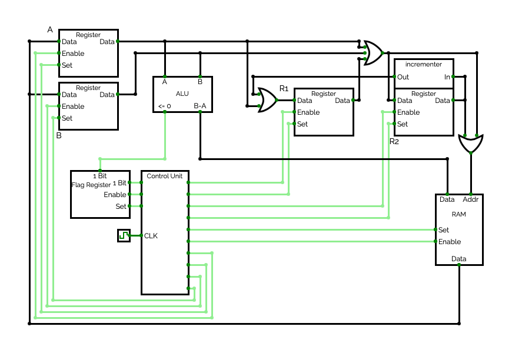

What is Subleq
You are confused and don't really know what is going on here? That's what this page is for. Subleq is a computer instruction that can be used for an OISC, or One Instruction Set Computer. An
OISC is a computer which does not support a few hundred instructions like a normal computer does, but only one single instruction. Subleq is suitable for this because it is Turing Complete,
which means that every program a normal computer can execute can be computed using only this single instruction.
Subleq is short for 'subtract and branch if less or equal to zero'. The Subleq instruction takes three arguments: A, B and C. The data at address A is subtracted from the data at address B
and the result is stored in address B. If the result is less or equal to zero, the program jumps to the address specified in the third argument, C.
What the assembler on this page does is to translate ordinary assembly instructions to these special Subleq instructions. The disadvantage of Subleq is that it needs a lot of instructions to
compute even simple programs and therefore needs lots of RAM. But at the same time the hardware needed to execute the Subleq instruction is so radically more simple than a normal CPU, that it
can be optimized extremely well and run on high clockspeeds while being very energy efficient. A potential Subleq CPU could look like this:

Full width data lines are represented using black lines, single bit control wires using green lines. This design requires 4 full size registers (64 bit per register for a 64 bit computer) and
one single bit register serving as a flag. The ALU only needs to calculate the difference between the two inputs and turn the '<= 0' flag on, if the result is less or equal to zero. The
incrementer needs to add one to its input and output the result. This design requires 15 steps to execute one complete Subleq instruction, all controlled by the control unit:
01. Enable R1, RAM and store in A
02. Copy A to R2
03. Enable R2, RAM and store in A
04. Copy R1 to R2
05. Copy R2 to R1
06. Enable R1, RAM and store in B
07. Copy B to R2
08. Enable R2, RAM and store in B
09. Subtract A from B and store in RAM (at R2) and in flag reg
10. Copy R1 to R2
11. Copy R2 to R1
12. Enable R1, RAM and store in A
13. Copy R1 to R2
14. Copy R2 to R1
15. If flag is high, copy A to R1
In the first three steps the CPU fetches the first argument of the Subleq instruction and saves the value it points to in the CPU register A. Steps four and five are used to increment the
program counter (or the instruction address register R1) by one. Steps six, seven and eight do basically the same thing as the first three steps, just now with the second argument of the
Subleq instruction and CPU register B. In step nine, A is subtracted from B and the result is stored in RAM and in the flag register. Step ten and eleven again increment the R1 by one. Step
twelve fetches the third argument, which is the address to jump to in case the result is less or equal to zero, and saves it in CPU register A. In the last step is checked, wheter the result
was less or equal to zero and if yes, the just fetched address is copied to the R1. Now one subleq instruction has been executed and the cycle can start again.
This CPU design would require about 3500 transistors for a 32 Bit implementation and about 6800 transistors for a 64 Bit implementation with a theoretical maximum of 16 Exabytes of RAM. In
comparison, the first real CPU, the 4 Bit Intel 4004 from 1971 had 2250 Transistors and the first mobile 64 Bit CPU, the Apple A7, had more than a billion transistors. A modern desktop CPU
like the Apple M1 Ultra has about 114 Billion transistors.